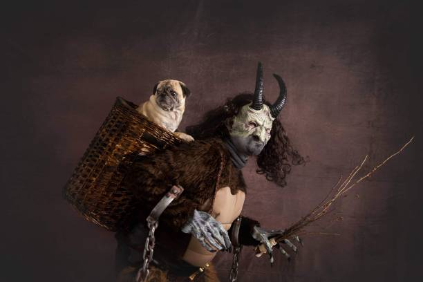

Santa Claus
Fortunately, good ole Saint Nick is not one of them. The Santa Claus figure originates from a kind and generous man named Saint Nicholas born in what is now modern-day Turkey in 270 A.D. Then the legend of Saint Nick was brought over into the U.S. by Dutch settlers and Saint Nicholas transformed into Santa Claus.
Santa Claus, known as Saint Nick or Father Christmas, is characterized as a jolly man with a thick, white beard, black belt and boots, red stocking hat, and a red tunic and pants. He rides on his nine-reindeer sleigh, traveling from the South Pole to across the world on a single Christmas Eve night to deliver presents to good little children all around the world. At the head of his sleigh is the red-nosed reindeer named Rudolph to lead the way.
To make all the presents and gifts for the good children, he has a team of elves making and packaging the presents down in the South Pole. He has a team of spy elves called elves on the shelf that hide in houses and report to Santa who is naughty and who is nice. He then makes a list compiled of all the naughty and nice children. For the nice children, he gives gifts, but there’s nothing but coal for the naughty ones.
Krampus
Now Santa is a notable and popular figure. He delivers presents to all the good children and nothing but black coal in stockings for the bad children. Now the children should not have been really naughty unless they are looking to have a visit from this Christmas monster.
Krampus is characterized as half goat, half demon with long pointed tongues, cloven hooves, and horns. It often carries a switch and a basket. While nice children received presents from Santa, naughty children received a spanking from Krampus’s switch. The naughtiest children are taken away and shackled in Krampus’s basket to be taken away to Hades or eaten by the demon.

Yule Cat
While some may consider receiving clothes or socks as a letdown for Christmas. Nothing can’t be worse than not receiving any clothes and getting eaten by the Yule Cat.
The Yule Cat is characterized as a large cat that towers overs house with sharp whiskers and glowing eyes. This Christmas monster originates from Iceland. As it goes, the Yule Cat peers through people’s windows and sees which children have received new clothes as presents. If the Yule Cat sees any children with torn or old clothes, it eats them.
The Yule Cat is said to be a pet of a family of trolls, the Yule Lads. The Yule Lads or Christmas Lads usually in numbers of 13, serve as gift-givers to children. They come from their mountain homes, and over a period of thirteen days, they leave small gifts for children. However, it was originally said that they were not gift givers, but instead they carried off misbehaved children or those children who cried too much.

Hope you get new clothes this Christmas and are good this year or else!